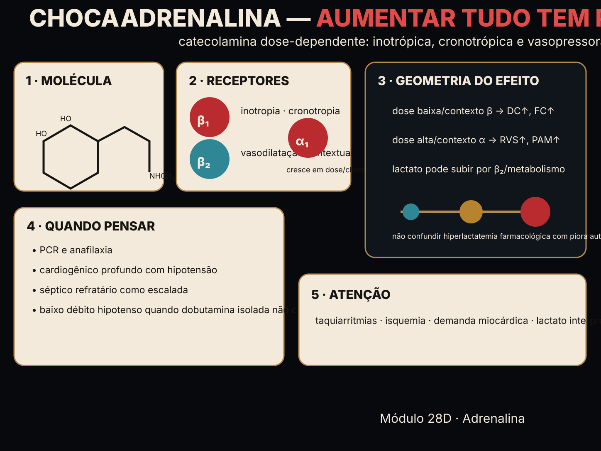

No cardiogênico, o débito caiu porque a bomba falhou. Os inotrópicos sobem a contratilidade — mas não são iguais: β1 (dobutamina, adrenalina) custam O₂ e arritmia; a PDE-3 (milrinona) é inodilatador (inotropia sem β, mas vasodilata). O erro mais comum é tratar débito baixo como se fosse vasoplegia. β1 → contratilidade + O₂ PDE-3 → inotropia + RVS↓

Vá ao Instrumento: num cardiogênico, compare os inotrópicos por ganho de débito e custo de O₂.
| agente | ΔDC (L/min) | balanço O₂ | ΔRVS |
|---|
Material educacional · não é suporte à decisão. O instrumento computa o mecanismo (débito, RVS, balanço de O₂) de perfis de receptores. Nunca exibe dose, titulação ou conduta para um paciente real.
→ O "balanço de O₂" é um índice didático (oferta − demanda), não uma medida clínica. → As diluições, faixas
de dose e a conversão dose↔mL/h são referência educacional e vivem no hub (M28) sob o SAFETY.md §11; o peso é hipotético. →
A escolha do inotrópico depende do termo quebrado e do custo — apresentada como mecanismo, sem prescrição individualizada. → Confira o protocolo da sua instituição.